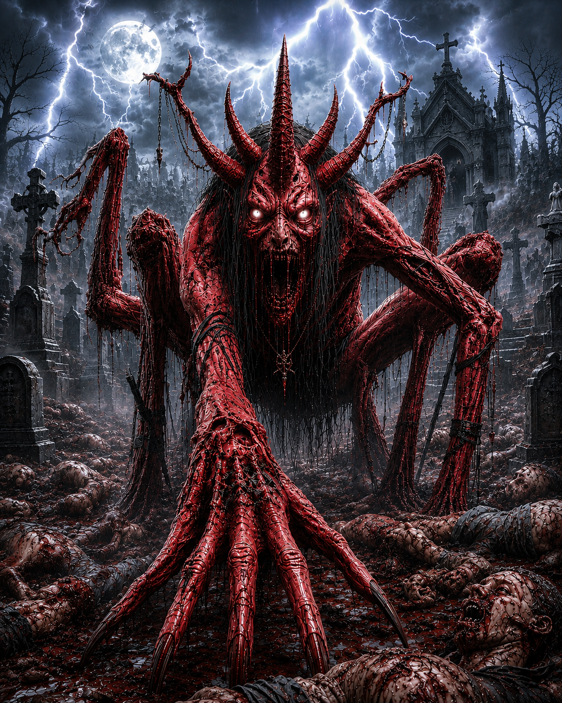

A criatura possui uma aparência extremamente aterrorizante e demoníaca. Seu corpo é gigantesco, coberto por uma pele vermelha escura que parece feita de carne viva, cheia de veias saltadas, rachaduras e textura grotesca. Ela se move como uma aranha monstruosa, usando várias pernas longas e finas, terminadas em garras afiadas e enormes.
Ela assusta pessoas, chamando parao habitat dela, com assovios e nomes da suas vitimas, Ela também consegue se camuflar, mudar de cor e se esconder. Além disso ela solta fogo e gelo pela boca.
Ela vive em um cemiterio abandonado, procurando as pessoas que vandalizão lugares abandonados
Ela consegue chegar ate 100 km/h